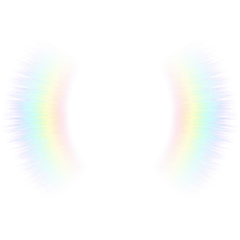

About me
About me
Hi,
我是金王亮。
具备一年设计实践经验，专注于 UI/UX 产品设计，具备从需求分析、体验规划到视觉落地的完整设计能力。曾参与 AI Agent 产品 0-1 体验设计及 C/B 端项目设计，覆盖用户场景分析、交互流程梳理、界面设计与体验优化。注重视觉表现与用户体验结合，能够从用户视角拆解问题，结合业务目标制定设计策略。持续探索AIGC、智能交互等新技术方向，关注设计趋势与方法沉淀，不断提升自身设计能力。
工作经历
瓢瓢文化创意有限公司「泛娱乐/电商」
UI设计师(实习)
·参与 C/B 端产品及运营视觉设计，负责从需求分析、界面设计到设计规范落地的完整流程，推动多场景体验优化与产品视觉统一。
上海皮克索极光科技有限公司「AI Agent」
UI设计师(实习)
·参与 AI Agent 产品 0-1 体验设计，围绕智能交互、角色 IP、多模态场景进行界面设计与体验优化，主导 AI 产品情感化体验构建，助力提升线上业务转化率。